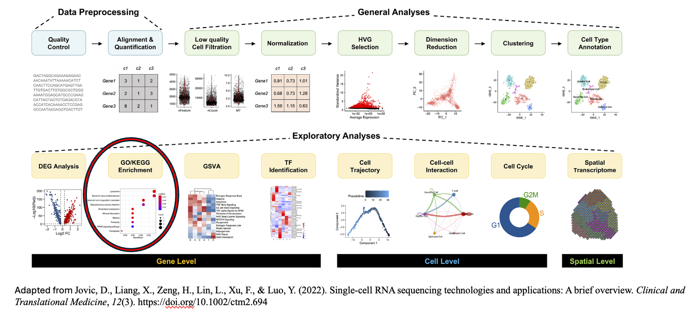
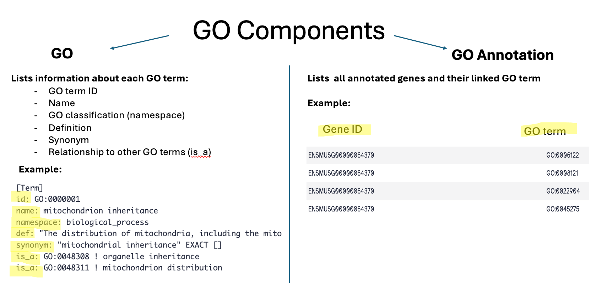
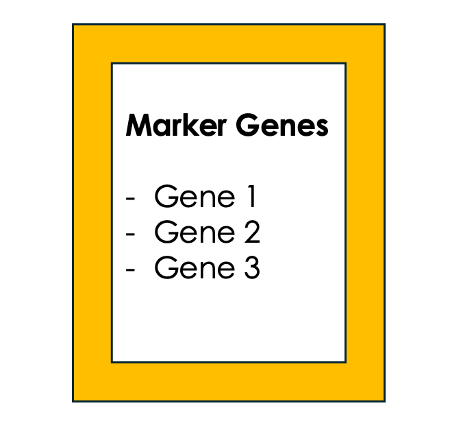
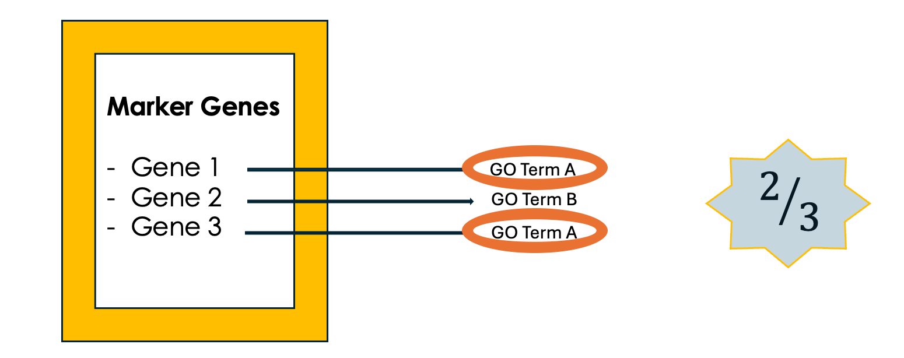
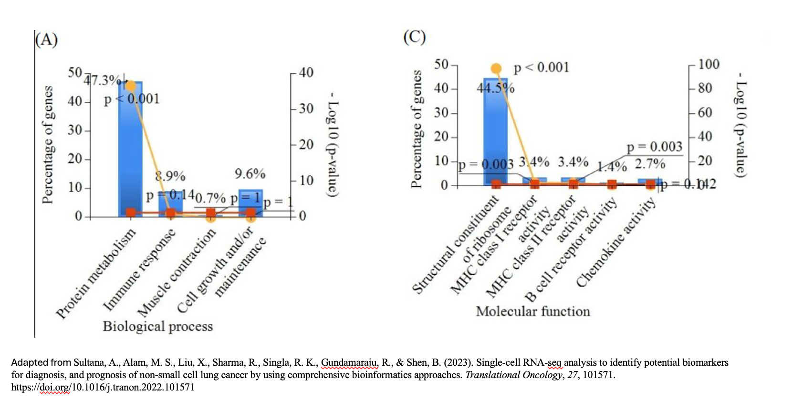
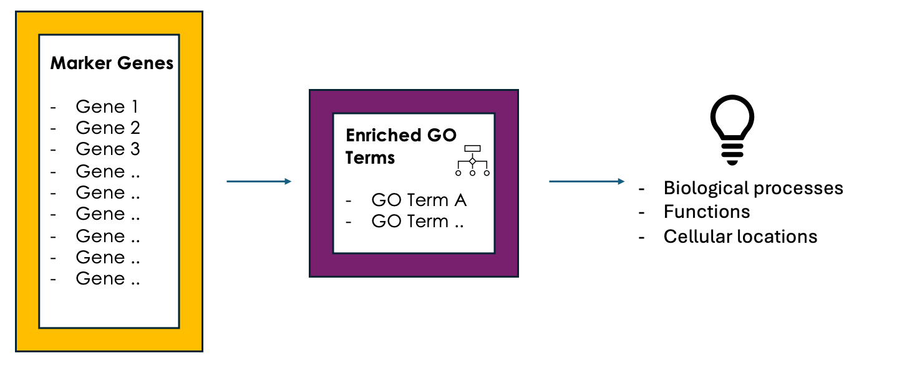

GO Enrichment Analysis on Single-Cell RNA-Seq Data
Contributors
Questions
What is Gene Ontology (GO) enrichment analysis, and why should I perform it on my marker genes?
How can I use GO enrichment analysis to better understand the biological functions of the genes in my clusters?
Can GO enrichment analysis help me confirm that my clusters represent distinct cell types or states?
Objectives
Aim to identify enriched GO terms associated with the DEGs.
Enhance understanding of biological processes, molecular functions, and cellular components involved.
scRNA-Seq data analysis roadmap
.image-100[]
Speaker Notes Here is a typical workflow for analyzing single-cell RNA sequencing data. We can break this process down into three main sections:
- Data Preprocessing: This is the initial step, where we focus on quality control, alignment, and quantification of the data. It’s crucial to ensure that our data is clean and reliable.
- General Analyses: In this phase, we filter out low-quality cells, normalize the data, and select highly variable genes, or HVGs. We then perform dimensionality reduction, cluster the cells, and annotate the different cell types. This step allows us to make sense of the data and identify distinct cell populations.
- Exploratory Analyses: Finally, we delve into exploratory analyses. This includes differential expression gene (DEG) analysis, functional enrichment studies, gene set variation analysis (GSVA), and transcription factor (TF) prediction. We also investigate cell trajectories, interactions between cells, cell cycles, and even spatial transcriptomics. This tutorial will focus on Gene Ontology (GO) Enrichment exploratory analysis.
Ontology
.center[A standardized vocabulary for expressing knowledge within a specific domain.] .image-100[]
Speaker Notes
- Before we introduce “GO enrichment analysis” let us first understand what it means by Ontology and Gene Ontology (GO).
- Ontology is a set of terms with their precise definitions and defined relationships between them. For example, imagine you are organizing a library of books. You want to classify and organize these books so that others can easily find what they are looking for. Ontology in this context would be a structured system for categorizing books.
Gene Ontology (GO): Unifying Biology
.image-100[]
Speaker Notes Gene Ontology has 3 main classifications (Biological process, Molecular function, and Cellular component) this allows scientists to precisely describe what a gene does, how it does it, and where it happens in the cell.
GO Hierarchy
.image-100[]
Speaker Notes
- The structure of Gene Ontology is hierarchical, meaning that terms at lower levels are more specific, while those higher up are more general. We can visualize the structure of GO as a graph, where each term represents a node, and the relationships between these terms are represented as edges connecting the nodes. This organization helps in understanding the connections and relationships among various gene functions, these relationships are either is_a, part_of, has_part, or regulates.
-
Note that it is possible for a term to have multiple parents.
.image-100[]
Speaker Notes
- “GO terms” are the unified vocabulary used within the Gene Ontology framework. Each GO term is accompanied by detailed information, and the GO list provides insights into these terms.
- Additionally, GO annotations illustrate the relationships between each GO term and the genes associated with them.
Example describing gene functions before and after Gene Ontology
.image-100[]
Speaker Notes This simple example illustrates how Gene Ontology (GO) adds clarity and standardization when describing gene functions.
.center[How to use GO to perform GO Enrichment Analysis on scRNA-Seq data?]
Speaker Notes Now that we understand what GO mean, let’s explore what is GO Enrichment analysis in the context of scRNA-Seq data.
Enrichment analysis of scRNA-Seq data
.image-100[] .center[Enrichment analysis is a type of functional annotation process which is the process of associating biological functions with genes or cells based on the expression data.]
Speaker Notes
- Enrichment analysis is a statistical approach used to determine whether certain biological features are overrepresented (enriched) in a subset of genes(i.e., Marker genes) compared to a broader background set.
GO Enrichment Analysis
.image-100[]
Speaker Notes
- Each GO term is associated with a set of genes.
- We try to find out which GO terms or gene sets are enriched in our list of marker genes.
- These GO terms are functionally assigned to various biological functions and locations, aiding our understanding of the roles of marker genes.
- Also note that each gene can be assigned to multiple GO terms allowing the capture of various functions, processes, and cellular components associated with a gene.
Steps of GO enrichment analysis
.left[1- Select the marker genes for each cell cluster / condition] .image-60[]
Speaker Notes We start the analysis by selecting a list of differentially expressed genes (marker genes). Marker genes could be a list of differentially expressed genes between 2 different conditions or between different cell types.
.left[2- Tag the genes with GO terms] .image-60[]
Speaker Notes Each gene can be “tagged” with one or more GO terms, similar to how books are categorized by genre or topic.
.left[3- Count How Many Times Each GO Term Appears] .image-60[]
Speaker Notes We then count the number of times each GO term shows up in your list of genes. For example, GO term A appears in 2 out of 3 genes
.left[4- Compare to the whole background gene set] .image-60[]
Speaker Notes
- Next, we compare how often each GO term appears in our gene list compared to how often it appears across the background gene set, this background may list all genes in the genome or all genes involved in the experiment.
- This comparison tells you whether certain GO terms are “enriched” or more common in the marker genes than you would expect by chance.
.left[5- Is It Significant? Basic interpretation:] .image-60[]
Speaker Notes
- Just because you see GO Term A a lot doesn’t necessarily mean it’s important—it could be by chance. So, we use statistical tests to see if the enrichment is statistically significant.
- While in this simple example, it is obvious that the proportion of genes associated with GO term A in the marker gene set (67%) is higher than the proportion in the background set (30%). This suggests that GO term A is potentially enriched in the marker gene set and we can add it to our purple list of enriched GO terms.
.left[6- Statistical testing:] .image-60[]
Speaker Notes
- In real-world scenarios where we have hundreds or thousands of genes we need to formally assess whether this difference is statistically significant (i.e., whether GO term A is truly enriched or if this difference is by chance). Fisher’s Exact Test and the hypergeometric test are the most commonly used tests in this situation.
- Fischer’s Exact test substitutes the values of the contingency table in a formula to calculate the probability (P-value) that corresponds to how likely the observed distribution is by chance. A lower P-value suggests that the GO term is truly enriched in the list of marker genes.
.left[7- Interpret the results:] .image-60[]
Speaker Notes After we have transformed the long list of marker genes into a short list of biological themes in the form of GO terms we can proceed with the interpretation of the results through visualization of the most common themes to identify patterns or relationships between GO terms, we can also analyze the GO hierarchy where higher-level categories (parent terms) provide broader biological contexts, while lower-level categories (child terms) offer more specific insights, in addition to relating the enriched GO terms to existing biological knowledge.
Example 1: GO Enrichment Analysis of Platelet Proteins in Early-Stage Cancer
.image-90[]
Speaker Notes
-
In a study by Zúñiga-León et al. (2018) they explored the differentially expressed platelet proteins in early-stage cancer in comparison to a control group.
-
The study revealed that out of 4,384 unique proteins expressed in platelets, 85 proteins showed significant differences in abundance in early-stage cancer patients compared to controls. This highlights the potential of platelets as biomarkers for early cancer detection.
-
The enrichment analysis identified 19 enriched biological processes, it also uncovered six enriched molecular functions.
Biological interpretation of the results
.image-100[ ]
]
Speaker Notes
- The 19 biological processes identified primarily relate to inflammatory response, immune response, and cancer annotations.
- Among the enriched GO terms, one notable member is protein (P06702), which has been found to be differentially expressed in several cancer types, including breast, colon, liver, gastric, and non-small cell lung cancer. This protein plays a crucial role in promoting cancer growth.
- Additionally, the analysis revealed five proteins that are directly associated with the GO term angiogenesis (GO:0001525). Angiogenesis is essential for tumor development, as it supplies the necessary blood flow for delivering nutrients and oxygen.
Example 2: Identifying Potential Biomarkers of Non-Small Cell Lung Cancer Through GO Enrichment Analysis of scRNA-Seq Data
.image-100[]
Speaker Notes
-
Non-small cell lung cancer (NSCLC) is the most prevalent lung cancer. This study aims to identify gene biomarkers for NSCLC diagnosis and prognosis using single-cell RNA sequencing (scRNA-seq) data and bioinformatics techniques.
-
158 differentially expressed genes (DEGs) were identified, comprising 48 upregulated and 110 downregulated genes.
-
Gene Ontology enrichment was then conducted on the differentially expressed genes (Marker genes), statistical testing was performed on each GO term and only GO terms with P-value < 0.01 were selected.
Results interpretation
.image-100[]
Purpose and Importance
.image-100[]
Speaker Notes
- To conclude, GO enrichment analysis helps scientists make sense of large gene lists by pointing out which biological processes, functions, or cellular locations are most relevant.
- Instead of looking at each gene individually, it allows researchers to focus on broader biological themes, making it easier to interpret the data.
Key Points
- GO enrichment analysis helps identify which biological processes, molecular functions, and cellular components are significantly represented in a set of genes.
- The analysis employs statistical methods to determine whether the observed enrichment of GO terms is greater than what would be expected by chance.
Thank you!
This material is the result of a collaborative work. Thanks to the Galaxy Training Network and all the contributors! Tutorial Content is licensed under
Creative Commons Attribution 4.0 International License.
Tutorial Content is licensed under
Creative Commons Attribution 4.0 International License.